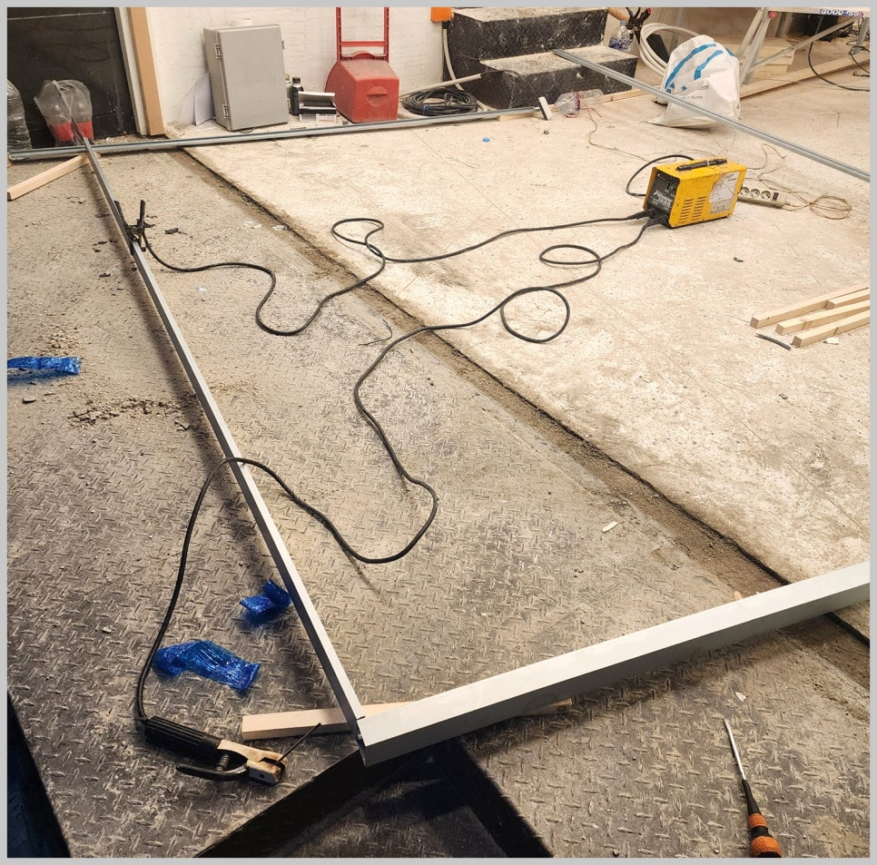
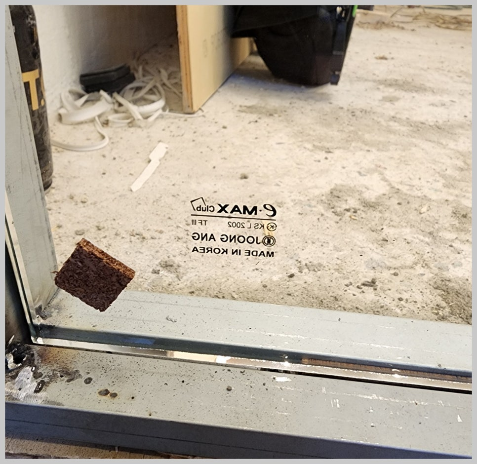

픽스창은 여닫지 않도록 고정해 둔 유리창을 말합니다. 서울 강남구의 한 1층 상가에서 인테리어 공사 도중, 정면의 접이식 문을 없애고 유리로 바꾸면 비용이 어떻게 되느냐는 연락을 주셨습니다. 매장 옆쪽에 드나드는 유리문이 이미 있어서, 정면 문짝과 레일을 모두 들어내고 12mm 강화유리 두 장을 고정했습니다.
한눈에 보기
| 작업 | 정면 접이식 문(폴딩도어) 철거 후 고정 유리 설치 |
|---|---|
| 지역 | 서울 강남구(역삼동) |
| 장소 | 인테리어 공사 중인 1층 상가, 옆면에 출입용 유리문 있음 |
| 유리 | 투명 강화유리 12T(12mm) 2장 |
| 바닥 | 하부 채널 새로 설치, 바깥 줄무늬 철판 쪽은 용접 고정 |
| 운반·설치 | 트럭에 세워 싣고 와서 흡착기로 여럿이 들어 세움 |



접이식 문을 다시 달까, 픽스창으로 막을까?
접이식 문의 장점은 날씨 좋은 날 정면 전체를 열어 둘 수 있다는 점입니다. 다만 문짝마다 경첩과 바퀴가 달려 있고, 바닥 홈에 흙먼지가 끼면 여닫기가 무거워지며 문짝 틈으로 찬 바람이 샐 수 있습니다.
픽스창은 열리지 않는 대신 움직이는 부품이 없어 손볼 일이 드뭅니다. 문짝 사이 세로 기둥이 사라져 길에서 매장 안이 시원하게 보이는 것도 장점입니다. 정면을 1년에 몇 번이나 활짝 여는지, 손님이 들어올 문이 따로 있는지 두 가지를 먼저 따져 보시면 됩니다. 이 매장은 옆에 유리문이 있어 정면을 막아도 드나드는 데 지장이 없었습니다.
이 현장 작업 순서
- 접이식 문짝과 위아래 레일을 모두 떼어 정면을 비웠습니다.
- 유리가 설 하부 채널을 정면 폭에 맞춰 깔고 수평을 맞췄습니다. 바깥쪽 바닥이 줄무늬 철판이라 채널은 용접으로 붙였습니다.
- 바깥 철판과 안쪽 시멘트 바닥이 만나는 경계를 따라 채널을 한 줄로 끝까지 이었습니다. 해가 뜨기 전 새벽부터 이어진 작업입니다.
- 트럭에 세워 싣고 온 12mm 판을 흡착기로 붙잡아 여럿이 들고, 한쪽씩 천천히 채널에 세웠습니다.
12mm 상가유리는 얼마나 무겁나요?
12mm 두께는 1㎡당 30kg 안팎이라, 이 매장처럼 정면을 두 장으로 나누면 판 하나가 100kg을 넘깁니다. 판이 짐칸 길이만큼 길어서 눕히지 않고 세운 채로 묶어 실어 왔습니다.
끼우고 나면 아래 끝이 채널 안에 숨어, 밖에서는 바닥에서 곧장 솟은 유리처럼 보입니다. 정면에 남은 세로 줄은 두 장이 맞닿은 이음매 하나뿐이고, 안쪽 벽과 조명까지 길에서 그대로 보입니다.
통유리시공 비용은 무엇으로 정해지나요?
유리값보다 현장 조건이 더 크게 작용합니다. 첫째는 정면의 가로·세로입니다. 한 판으로 만들 수 있는 크기를 넘으면 장수와 이음매가 늘고, 판이 커질수록 드는 사람 손도 늘어납니다.
둘째는 레일을 걷어 낸 뒤 드러나는 바닥입니다. 높낮이가 고르지 않거나 이 현장처럼 안팎 재질이 다르면 채널 잡는 시간이 길어집니다. 셋째는 반입 동선으로, 트럭을 매장 바로 앞에 댈 수 있는지와 인도 폭에 따라 시간과 인원이 달라집니다. 정해진 금액표 대신 사진과 치수를 보고 안내해 드립니다.
자주 묻는 질문
- Q. 설치한 유리가 강화유리인지 어떻게 알 수 있나요?
- 유리 아래쪽 모서리에 KS L 2002라는 글자가 찍혀 있습니다. 강화유리의 KS 규격 번호이니 공사가 끝난 뒤 이 표시를 찾아보시면 됩니다.
- Q. 픽스창으로 바꾸면 출입은 어디로 하나요?
- 정면은 열리지 않으므로 드나들 문이 따로 있어야 합니다. 이 매장은 옆면에 유리문이 이미 있어서 정면 전체를 고정할 수 있었습니다.